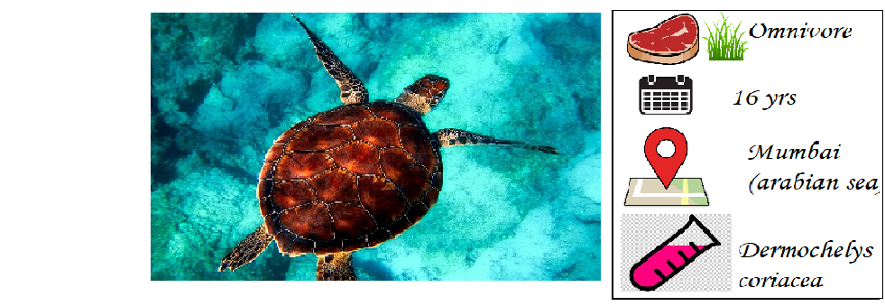

Endangered Marine Animals In India
Leatherbacked Sea Turtles

*In India, leatherback turtles nest mainly in the Andaman and Nicobar islands. But where they go from
there is not known.
*Leatherback turtles are the largest of living sea turtles, growing up to two metres
and weighing as much as 900 kg.
*However these leatherback turtles are now on the brink of extinctionbecause of plastic bags floating in
the ocean. Pacific leatherback sea turtles mistake these plasticbags for jellyfish; an estimated one-
third of adults have ingested plastic.
Ganga River Dolphins

*Ganges river dolphins once lived in the Ganges-Brahmaputra-Meghna river systems of Nepal, India,
and Bangladesh.
*But the species is extinct from most.Ganges river dolphin can only live in freshwater and is
essentially blind.
*These dolphins are hunted by people in the Brahmaputra River for meat and by fishermen in the Ganges
River for oil. River dolphins trapped in dams are the target of poachers specially in the summers
when the waters begin to dry and also are littered by humans.